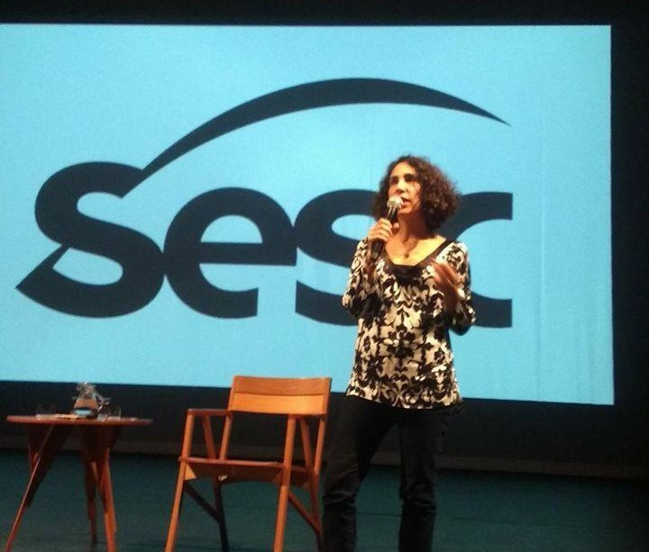
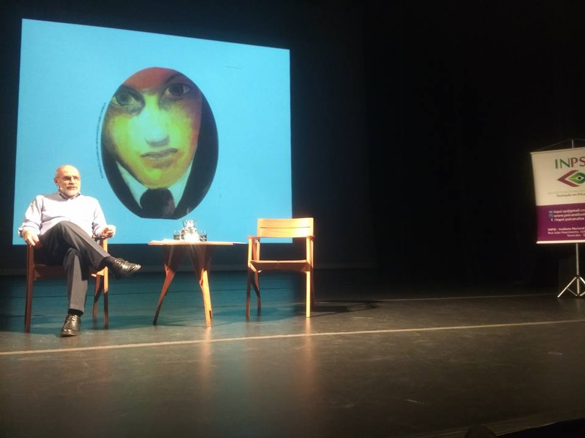
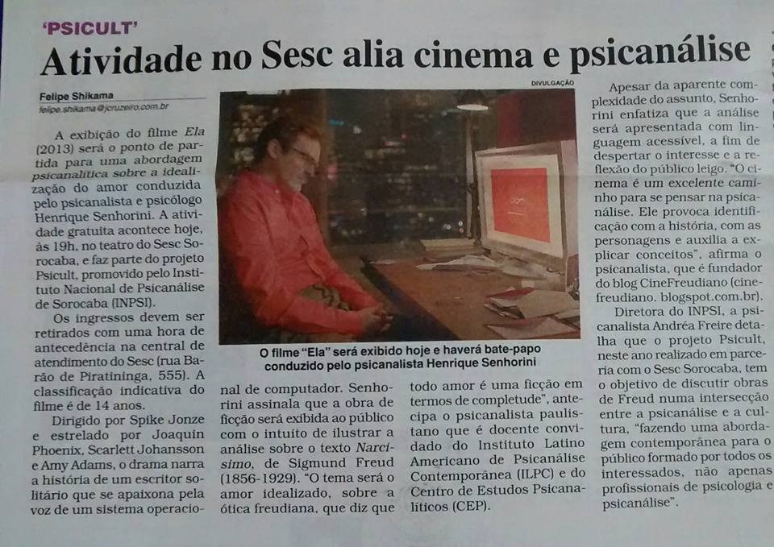
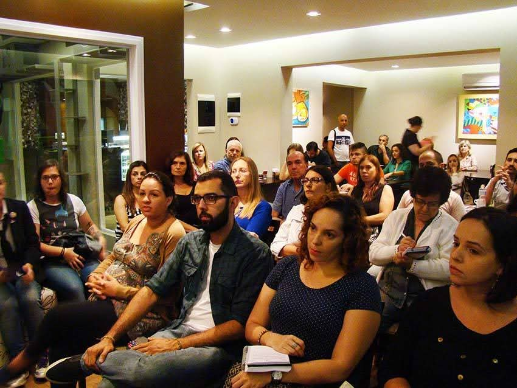
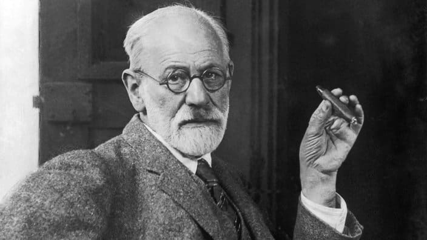

Iniciativa Cultural
Psicanálise & Cultura (PsiCULT)




Psicanálise & Cultura
O PsiCULT surgiu da ideia de transmitir o conhecimento da Psicanálise ao público leigo, também em algumas ocasiões convidamos profissionais de outras áreas para discutir um tema em comum. Iniciou-se em 2014 no Café Com Gato, local conhecido de Sorocaba pelo espaço lúdico com os felinos. Como o número de público cresceu consideravelmente, tivemos que migrar para um local maior e foi aí que o SESC Sorocaba abraçou edições posteriores em sua praça de alimentação, o que mantinha o formato anterior, de um local descontraído, com café e reflexão.
Depois passamos brevemente pela Oficina Cultural Grande Otelo, da Secretaria Estadual da Cultura. Com a pandemia, o PsiCULT passou para o formato online, com Lives no perfil do Instagram, continuando a levar a transmissão da Psicanálise a todos, desta vez além da geografia local.
Freud em destaque
Tivemos ainda eventos no anfiteatro do SESC Sorocaba para celebrar o aniversário de Sigmund Freud em maio e com temas pontuais para discussão com o público, Cinema & Psicanálise, tendo como convidados profissionais de outras localidades e âmbito nacional, como a psicanalista Maria Lucia Homem e o psicanalista escritor Alfredo Simonetti (Café Filosófico da TV Cultura). Registros de nossos eventos no Facebook e Instagram.
Acesse o Facebook Acesse o Instagram